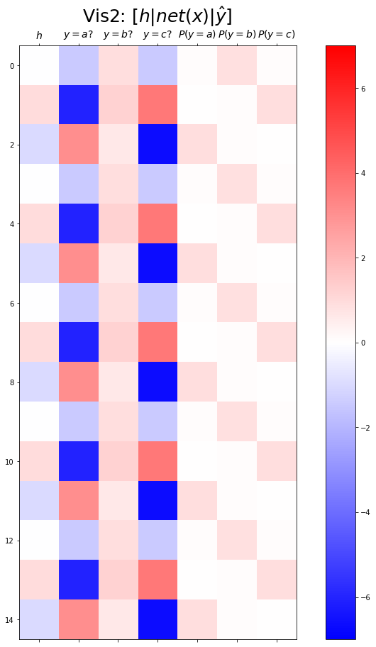

import torch
import numpy as np
import matplotlib.pyplot as plt10wk-1: 순환신경망 (2)
순환신경망
순환신경망 intro (2)– abc예제, abdc예제, AbAcAd예제(1)
강의영상
https://youtube.com/playlist?list=PLQqh36zP38-wXdABtimM1pYK5TjPTBA6X
import
Define some funtions
def f(txt,mapping):
return [mapping[key] for key in txt]
soft = torch.nn.Softmax(dim=1)Exam2: abc
data
txt = list('abc')*100
txt[:10]['a', 'b', 'c', 'a', 'b', 'c', 'a', 'b', 'c', 'a']txt_x = txt[:-1]
txt_y = txt[1:]txt_x[:5],txt_y[:5](['a', 'b', 'c', 'a', 'b'], ['b', 'c', 'a', 'b', 'c'])하나의 은닉노드를 이용한 풀이 – 억지로 성공
- 데이터정리
mapping = {'a':0,'b':1,'c':2}
x = torch.tensor(f(txt_x,mapping))
y = torch.tensor(f(txt_y,mapping))
x[:5],y[:5](tensor([0, 1, 2, 0, 1]), tensor([1, 2, 0, 1, 2]))- 학습
torch.manual_seed(43052)
net = torch.nn.Sequential(
torch.nn.Embedding(num_embeddings=3,embedding_dim=1),
torch.nn.Tanh(),
#===#
torch.nn.Linear(in_features=1,out_features=3)
)
loss_fn = torch.nn.CrossEntropyLoss()
optimizr = torch.optim.Adam(net.parameters())for epoc in range(5000):
## 1
## 2
loss = loss_fn(net(x),y)
## 3
loss.backward()
## 4
optimizr.step()
optimizr.zero_grad()- 결과해석
hidden = net[:-1](x).data
yhat = soft(net(x)).dataplt.plot(hidden[:9],'--o')
plt.plot(net(x).data[:9],'--o')plt.plot(yhat[:9],'--o')
- 억지로 맞추고있긴한데 파라메터가 부족해보인다.
- 결과시각화1
fig,ax = plt.subplots(1,3,figsize=(15,5))
ax[0].plot(hidden[:9],'--o'); ax[0].set_title('$h:=(tanh \circ linr_1)(x)$',size=15)
ax[1].plot(net(x).data[:9],'--o'); ax[1].set_title('$net(x):=(linr_2 \circ tanh \circ linr_1)(x)$',size=15)
ax[2].plot(yhat[:9],'--o'); ax[2].set_title('$\hat{y}$ = softmax$(net(x))$',size=15);
fig.suptitle(r"Vis1: $h,net(x),\hat{y}$",size=20)
plt.tight_layout()
hidden[:9], (net[-1].weight.data).T, net[-1].bias.data(tensor([[-0.0147],
[ 0.9653],
[-0.9896],
[-0.0147],
[ 0.9653],
[-0.9896],
[-0.0147],
[ 0.9653],
[-0.9896]]),
tensor([[-4.6804, 0.3071, 5.2894]]),
tensor([-1.5440, 0.9143, -1.3970]))hidden[:9]@(net[-1].weight.data).T + net[-1].bias.datatensor([[-1.4755, 0.9098, -1.4745],
[-6.0618, 1.2108, 3.7086],
[ 3.0875, 0.6104, -6.6312],
[-1.4755, 0.9098, -1.4745],
[-6.0618, 1.2108, 3.7086],
[ 3.0875, 0.6104, -6.6312],
[-1.4755, 0.9098, -1.4745],
[-6.0618, 1.2108, 3.7086],
[ 3.0875, 0.6104, -6.6312]])- (파랑,주황,초록) 순서로 그려짐
- 파랑 = hidden * (-4.6804) + (-1.5440)
- 주황 = hidden * (0.3071) + (0.9143)
- 초록 = hidden * (5.2894) + (-1.3970)
- 내부동작을 잘 뜯어보니까 사실 엉성해. 엄청 위태위태하게 맞추고 있었음.
- weight: 파랑과 초록을 구분하는 역할을 함
- weight + bias: 뭔가 교모하게 애매한 주황값을 만들어서 애매하게 ’b’라고 나올 확률을 학습시킨다. \(\to\) 사실 학습하는 것 같지 않고 때려 맞추는 느낌, 쓸수있는 weight가 한정적이라서 생기는 현상 (양수,음수,0)
참고: torch.nn.Linear()의 비밀?
- 사실 \({\boldsymbol y}={\boldsymbol x}{\bf W} + {\boldsymbol b}\) 꼴에서의 \({\bf W}\)와 \({\boldsymbol b}\)가 저장되는게 아니다.
- \({\boldsymbol y}={\boldsymbol x}{\bf A}^T + {\boldsymbol b}\) 꼴에서의 \({\bf A}\)와 \({\boldsymbol b}\)가 저장된다.
- \({\bf W} = {\bf A}^T\) 인 관계에 있으므로 l1.weight 가 우리가 생각하는 \({\bf W}\) 로 해석하려면 사실 transpose를 취해줘야 한다.
왜 이렇게..?
- 계산의 효율성 때문 (numpy의 구조를 알아야함)
- \({\boldsymbol x}\), \({\boldsymbol y}\) 는 수학적으로는 col-vec 이지만 메모리에 저장할시에는 row-vec 로 해석하는 것이 자연스럽다. (사실 메모리는 격자모양으로 되어있지 않음)
잠깐 딴소리!!
(예시1)
_arr = np.array(range(4)).reshape(2,2)_arr.strides(16, 8)- 아래로 한칸 = 16칸 jump
- 오른쪽으로 한칸 = 8칸 jump
(예시2)
_arr = np.array(range(6)).reshape(3,2)_arr.strides(16, 8)- 아래로 한칸 = 16칸 jump
- 오른쪽으로 한칸 = 8칸 jump
(예시3)
_arr = np.array(range(6)).reshape(2,3)_arr.strides(24, 8)- 아래로 한칸 = 24칸 jump
- 오른쪽으로 한칸 = 8칸 jump
(예시4)
_arr = np.array(range(4),dtype=np.int8).reshape(2,2)_arrarray([[0, 1],
[2, 3]], dtype=int8)_arr.strides(2, 1)- 아래로한칸 = 2칸 (= 2바이트 jump = 16비트 jump)
- 오른쪽으로 한칸 = 1칸 jump (= 1바이트 jump = 8비트 jump)
진짜 참고..
- 1바이트 = 8비트
- 1바이트는 2^8=256 의 정보 표현
- np.int8은 8비트로 정수를 저장한다는 의미
2**8256print(np.array(55,dtype=np.int8))
print(np.array(127,dtype=np.int8))
print(np.array(300,dtype=np.int8)) # overflow 55
127
44딴소리 끝!!
- 결과시각화2
combined = torch.concat([hidden,net(x).data,yhat],axis=1)
combined.shapetorch.Size([299, 7])fig,ax = plt.subplots(1,3,figsize=(15,5))
ax[0].plot(hidden[:9],'--o'); ax[0].set_title('$h:=(tanh \circ linr_1)(x)$',size=15)
ax[1].plot(net(x).data[:9],'--o'); ax[1].set_title('$net(x):=(linr_2 \circ tanh \circ linr_1)(x)$',size=15)
ax[2].plot(yhat[:9],'--o'); ax[2].set_title('$\hat{y}$ = softmax$(net(x))$',size=15);
fig.suptitle(r"Vis1: $h,net(x),\hat{y}$",size=20)
plt.tight_layout()
plt.matshow(combined[:15],vmin=-7,vmax=7,cmap='bwr')
plt.xticks(range(7), labels=[r'$h$',r'$y=a?$',r'$y=b?$',r'$y=c?$',r'$P(y=a)$',r'$P(y=b)$',r'$P(y=c)$'],size=14)
plt.colorbar()
plt.gcf().set_figwidth(15)
plt.gcf().set_figheight(15)
plt.title(r"Vis2: $[h | net(x) | \hat{y}]$",size=25)Text(0.5, 1.0, 'Vis2: $[h | net(x) | \\hat{y}]$')
Exam3: abcd
data
txt = list('abcd')*100
txt[:10]['a', 'b', 'c', 'd', 'a', 'b', 'c', 'd', 'a', 'b']txt_x = txt[:-1]
txt_y = txt[1:]txt_x[:5],txt_y[:5](['a', 'b', 'c', 'd', 'a'], ['b', 'c', 'd', 'a', 'b'])하나의 은닉노드를 이용한 풀이 – 억지로 성공
- 데이터정리
mapping = {'a':0,'b':1,'c':2,'d':3}
x = torch.tensor(f(txt_x,mapping))
y = torch.tensor(f(txt_y,mapping))
x[:5],y[:5](tensor([0, 1, 2, 3, 0]), tensor([1, 2, 3, 0, 1]))- 학습
net = torch.nn.Sequential(
torch.nn.Embedding(num_embeddings=4,embedding_dim=1),
torch.nn.Tanh(),
torch.nn.Linear(in_features=1,out_features=4)
)
loss_fn = torch.nn.CrossEntropyLoss()
optimizr = torch.optim.Adam(net.parameters())net[0].weight.data = torch.tensor([[-0.3333],[-2.5000],[5.0000],[0.3333]])
net[-1].weight.data = torch.tensor([[1.5000],[-6.0000],[-2.0000],[6.0000]])
net[-1].bias.data = torch.tensor([0.1500, -2.0000, 0.1500, -2.000])for epoc in range(5000):
## 1
## 2
loss = loss_fn(net(x),y)
## 3
loss.backward()
## 4
optimizr.step()
optimizr.zero_grad()- 결과시각화1
hidden = net[:-1](x).data
yhat = soft(net(x)).datafig,ax = plt.subplots(1,3,figsize=(15,5))
ax[0].plot(hidden[:9],'--o'); ax[0].set_title('$h:=(tanh \circ linr_1)(x)$',size=15)
ax[1].plot(net(x).data[:9],'--o'); ax[1].set_title('$net(x):=(linr_2 \circ tanh \circ linr_1)(x)$',size=15)
ax[2].plot(yhat[:9],'--o'); ax[2].set_title('$\hat{y}$ = softmax$(net(x))$',size=15);
fig.suptitle(r"Vis1: $h,net(x),\hat{y}$",size=20)
plt.tight_layout()
- 결과시각화2
combined = torch.concat([hidden,net(x).data,yhat],axis=1)
combined.shapetorch.Size([399, 9])plt.matshow(combined[:15],vmin=-15,vmax=15,cmap='bwr')
plt.xticks(range(9), labels=[r'$h$',r'$y=a?$',r'$y=b?$',r'$y=c?$',r'$y=d?$',r'$P(y=a)$',r'$P(y=b)$',r'$P(y=c)$',r'$P(y=d)$'],size=14)
plt.colorbar()
plt.gcf().set_figwidth(15)
plt.gcf().set_figheight(15)
plt.title(r"Vis2: $[h | net(x) | \hat{y}]$",size=25)Text(0.5, 1.0, 'Vis2: $[h | net(x) | \\hat{y}]$')두개의 은닉노드를 이용한 풀이 – 깔끔한 성공
- 데이터정리
mapping = {'a':0,'b':1,'c':2,'d':3}
x = torch.tensor(f(txt_x,mapping))
y = torch.tensor(f(txt_y,mapping))
x[:5],y[:5](tensor([0, 1, 2, 3, 0]), tensor([1, 2, 3, 0, 1]))- 학습
torch.manual_seed(43052)
net = torch.nn.Sequential(
torch.nn.Embedding(num_embeddings=4,embedding_dim=2),
torch.nn.Tanh(),
torch.nn.Linear(in_features=2,out_features=4)
)
loss_fn = torch.nn.CrossEntropyLoss()
optimizr = torch.optim.Adam(net.parameters())for epoc in range(5000):
## 1
yhat = net(x)
## 2
loss = loss_fn(yhat,y)
## 3
loss.backward()
## 4
optimizr.step()
optimizr.zero_grad()- 결과시각화1
hidden = net[:-1](x).data
yhat = soft(net(x)).datafig,ax = plt.subplots(1,3,figsize=(15,5))
ax[0].plot(hidden[:9],'--o'); ax[0].set_title('$h:=(tanh \circ linr_1)(x)$',size=15)
ax[1].plot(net(x).data[:9],'--o'); ax[1].set_title('$net(x):=(linr_2 \circ tanh \circ linr_1)(x)$',size=15)
ax[2].plot(yhat[:9],'--o'); ax[2].set_title('$\hat{y}$ = softmax$(net(x))$',size=15);
fig.suptitle(r"Vis1: $h,net(x),\hat{y}$",size=20)
plt.tight_layout()
- 결과시각화2
combined = torch.concat([hidden,net(x).data,yhat],axis=1)
combined.shapetorch.Size([399, 10])plt.matshow(combined[:15],vmin=-7,vmax=7,cmap='bwr')
plt.xticks(range(10), labels=[r'$h$',r'$h$',r'$y=a?$',r'$y=b?$',r'$y=c?$',r'$y=d?$',r'$P(y=a)$',r'$P(y=b)$',r'$P(y=c)$',r'$P(y=d)$'],size=14)
plt.colorbar()
plt.gcf().set_figwidth(15)
plt.gcf().set_figheight(15)
plt.title(r"Vis2: $[h | net(x) | \hat{y}]$",size=25)Text(0.5, 1.0, 'Vis2: $[h | net(x) | \\hat{y}]$')
Exam4: AbAcAd
data
txt = list('AbAcAd')*100
txt[:10]['A', 'b', 'A', 'c', 'A', 'd', 'A', 'b', 'A', 'c']txt_x = txt[:-1]
txt_y = txt[1:]txt_x[:5],txt_y[:5](['A', 'b', 'A', 'c', 'A'], ['b', 'A', 'c', 'A', 'd'])두개의 은닉노드를 이용한 풀이 – 실패
- 데이터정리
mapping = {'A':0,'b':1,'c':2,'d':3}
x = torch.tensor(f(txt_x,mapping))
y = torch.tensor(f(txt_y,mapping))
x[:5],y[:5](tensor([0, 1, 0, 2, 0]), tensor([1, 0, 2, 0, 3]))- 학습
torch.manual_seed(43052)
net = torch.nn.Sequential(
torch.nn.Embedding(num_embeddings=4,embedding_dim=2),
torch.nn.Tanh(),
torch.nn.Linear(in_features=2,out_features=4)
)
loss_fn = torch.nn.CrossEntropyLoss()
optimizr = torch.optim.Adam(net.parameters())for epoc in range(5000):
## 1
yhat = net(x)
## 2
loss = loss_fn(yhat,y)
## 3
loss.backward()
## 4
optimizr.step()
optimizr.zero_grad()- 결과시각화1
hidden = net[:-1](x).data
yhat = soft(net(x)).datafig,ax = plt.subplots(1,3,figsize=(15,5))
ax[0].plot(hidden[:9],'--o'); ax[0].set_title('$h:=(tanh \circ linr_1)(x)$',size=15)
ax[1].plot(net(x).data[:9],'--o'); ax[1].set_title('$net(x):=(linr_2 \circ tanh \circ linr_1)(x)$',size=15)
ax[2].plot(yhat[:9],'--o'); ax[2].set_title('$\hat{y}$ = softmax$(net(x))$',size=15);
fig.suptitle(r"Vis1: $h,net(x),\hat{y}$",size=20)
plt.tight_layout()- 결과시각화2
combined = torch.concat([hidden,net(x).data,yhat],axis=1)
combined.shapetorch.Size([599, 10])plt.matshow(combined[:15],vmin=-5,vmax=5,cmap='bwr')
plt.xticks(range(10), labels=[r'$h$',r'$h$',r'$y=A?$',r'$y=b?$',r'$y=c?$',r'$y=d?$',r'$P(y=A)$',r'$P(y=b)$',r'$P(y=c)$',r'$P(y=d)$'],size=14)
plt.colorbar()
plt.gcf().set_figwidth(15)
plt.gcf().set_figheight(15)
plt.title(r"Vis2: $[h | net(x) | \hat{y}]$",size=25)Text(0.5, 1.0, 'Vis2: $[h | net(x) | \\hat{y}]$')
- 실패
- 실패를 해결하는 순진한 접근방식: 위 문제를 해결하기 위해서는 아래와 같은 구조로 데이터를 다시 정리하면 될 것이다.
| X | y |
|---|---|
| A,b | A |
| b,A | c |
| A,c | A |
| c,A | d |
| A,d | A |
| d,A | b |
| A,b | A |
| b,A | c |
| … | … |
- 순진한 접근방식의 비판: - 결국 정확하게 직전 2개의 문자를 보고 다음 문제를 예측하는 구조 - 만약에 직전 3개의 문자를 봐야하는 상황이 된다면 또 다시 코드를 수정해야함. - 그리고 실전에서는 직전 몇개의 문자를 봐야하는지 모름.
이것에 대한 해결책은 순환신경망이다. 다음시간에 설명
숙제
주어진 자료가 다음과 같다고 하자.
txt = list('abcde')*100
txt[:10]['a', 'b', 'c', 'd', 'e', 'a', 'b', 'c', 'd', 'e']txt_x = txt[:-1]
txt_y = txt[1:]txt_x[:5],txt_y[:5](['a', 'b', 'c', 'd', 'e'], ['b', 'c', 'd', 'e', 'a'])아래 코드를 변형하여 적절한 네트워크를 설계하고 위의 자료를 학습하라. (깔끔한 성공을 위한 최소한의 은닉노드를 설정할 것)
net = torch.nn.Sequential(
torch.nn.Embedding(num_embeddings=??,embedding_dim=??),
torch.nn.Tanh(),
torch.nn.Linear(in_features=??,out_features=??)
)(풀이)
a,b,c,d,e 를 표현함에 있어서 3개의 은닉노드면 충분하다.
- 1개의 은닉노드 -> 2개의 문자를 표현할 수 있음.
- 2개의 은닉노드 -> 4개의 문자를 표현할 수 있음.
- 3개의 은닉노드 -> 8개의 문자를 표현할 수 있음.
mapping = {'a':0,'b':1,'c':2,'d':3,'e':4}
x = torch.tensor(f(txt_x,mapping))
y = torch.tensor(f(txt_y,mapping))
x[:5],y[:5](tensor([0, 1, 2, 3, 4]), tensor([1, 2, 3, 4, 0]))torch.manual_seed(43052)
net = torch.nn.Sequential(
torch.nn.Embedding(num_embeddings=5,embedding_dim=3),
torch.nn.Tanh(),
torch.nn.Linear(in_features=3,out_features=5)
)
loss_fn = torch.nn.CrossEntropyLoss()
optimizr = torch.optim.Adam(net.parameters())for epoc in range(5000):
## 1
yhat = net(x)
## 2
loss = loss_fn(yhat,y)
## 3
loss.backward()
## 4
optimizr.step()
optimizr.zero_grad()- 결과시각화1
hidden = net[:-1](x).data
yhat = soft(net(x)).datafig,ax = plt.subplots(1,3,figsize=(15,5))
ax[0].plot(hidden[:9],'--o'); ax[0].set_title('$h:=(tanh \circ linr_1)(x)$',size=15)
ax[1].plot(net(x).data[:9],'--o'); ax[1].set_title('$net(x):=(linr_2 \circ tanh \circ linr_1)(x)$',size=15)
ax[2].plot(yhat[:9],'--o'); ax[2].set_title('$\hat{y}$ = softmax$(net(x))$',size=15);
fig.suptitle(r"Vis1: $h,net(x),\hat{y}$",size=20)
plt.tight_layout()- 결과시각화2
combined = torch.concat([hidden,net(x).data,yhat],axis=1)
combined.shapetorch.Size([499, 13])plt.matshow(combined[:15],vmin=-5,vmax=5,cmap='bwr')
plt.xticks(range(13), labels=[r'$h$',r'$h$',r'$h$',
r'$y=A?$',r'$y=b?$',r'$y=c?$',r'$y=d?$',r'$y=e?$',
r'$P(y=A)$',r'$P(y=b)$',r'$P(y=c)$',r'$P(y=d)$',r'$P(y=e)$'],size=13)
plt.colorbar()
plt.gcf().set_figwidth(15)
plt.gcf().set_figheight(15)
plt.title(r"Vis2: $[h | net(x) | \hat{y}]$",size=25)Text(0.5, 1.0, 'Vis2: $[h | net(x) | \\hat{y}]$')